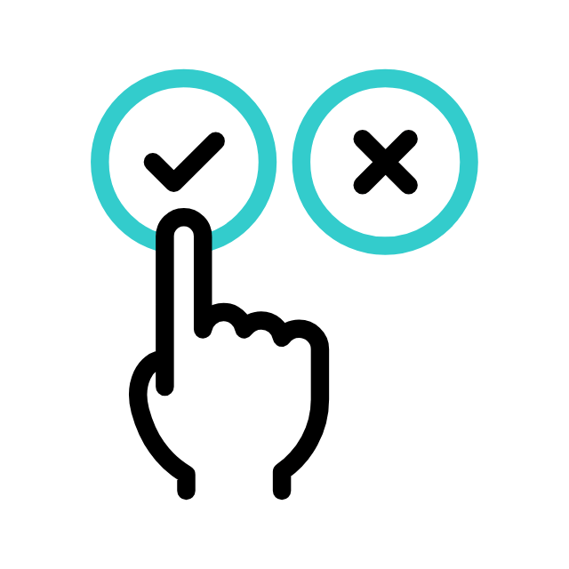

Modernismo 1ª geração
Trancrição
Chama-se genericamente modernismo ao conjunto de movimentos culturais, escolas e estilos que permearam as artes e o design da primeira metade do século XX. Apesar de ser possível encontrar pontos de convergência entre os vários movimentos, eles em geral se diferenciam e até mesmo se antagonizam.
Contexto do modernismo no Brasil
A primeira geração modernista ou primeira fase do modernismo no Brasil é chamada de "fase heroica" e se
estende de 1922 até 1930.
Lembre-se que o modernismo foi um movimento artístico, cultural, político e social bem amplo.
No Brasil, ele foi dividido em três fases, onde cada uma apresentava suas singularidades segundo o contexto
histórico inserido.
Principais Características
Entre as principais características do Modernismo no Brasil estão:
- Valorização da linguagem popular e coloquial;
- Romantismo rejeitado em favor de temas mais urbanos e contemporâneos;
- Experimentação literária e artística;
- Busca por uma identidade cultural brasileira;
- Manifestações artísticas múltiplas, incluindo poesia, prosa, pintura, música e teatro.
Principais Figuras do Modernismo Brasileiro
O Modernismo no Brasil contou com figuras proeminentes, como Mário de Andrade, Oswald de Andrade, Tarsila do Amaral, Anita Malfatti, Manuel Bandeira e Rachel de Queiroz. Cada um contribuiu de maneira única para o movimento e deixou um legado duradouro na cultura brasileira.
Legado
O Modernismo deixou um legado profundo no Brasil, influenciando não apenas a literatura e as artes, mas também a forma como o país se via e se expressava. O movimento desempenhou um papel fundamental na construção de uma identidade cultural brasileira mais moderna, diversa e autêntica.
Principais Autores
Alguns dos principais autores associados ao Modernismo no Brasil incluem:
- Mário de Andrade: Conhecido por sua obra "Macunaíma," Mário de Andrade foi um dos líderes do movimento modernista e contribuiu significativamente para a valorização da cultura popular brasileira.
- Oswald de Andrade: Autor de "Memórias Sentimentais de João Miramar" e do Manifesto Antropófago, Oswald de Andrade propôs a ideia de "devorar" influências estrangeiras e transformá-las em algo genuinamente brasileiro.
- Cecília Meireles: Renomada poetisa, Cecília Meireles explorou temas líricos e sociais em sua poesia, deixando um legado duradouro na literatura brasileira.
- Graciliano Ramos: Autor de "Vidas Secas" e "Angústia," Graciliano Ramos é conhecido por seu estilo realista e crítico.
- Rachel de Queiroz: A autora de "O Quinze" foi a primeira mulher a ingressar na Academia Brasileira de Letras, e sua obra destacou as questões sociais do Nordeste do Brasil.

Principais Movimentos Artísticos
Além dos autores, vários movimentos artísticos surgiram durante o Modernismo, enriquecendo a expressão cultural do Brasil:
- Semana de Arte Moderna de 1922: O evento marcou o início do Modernismo e trouxe inovações nas áreas de literatura, música, teatro e artes visuais.
- Movimento Pau-Brasil: Encabeçado por Oswald de Andrade, este movimento buscava valorizar a "brasilidade" por meio da mistura de elementos nacionais e estrangeiros.
- Antropofagia: Também liderado por Oswald de Andrade, o movimento da Antropofagia pregava a ideia de "devorar" a cultura estrangeira e transformá-la em algo único e brasileiro.
- Tarsila do Amaral e o Movimento Antropofágico: A artista Tarsila do Amaral desempenhou um papel fundamental na fusão de elementos indígenas e modernistas em sua obra, refletindo os ideais do movimento Antropofágico.
Esses autores e movimentos artísticos foram peças-chave na transformação do cenário cultural brasileiro durante o Modernismo, e seu legado continua a influenciar a produção artística e literária no país até os dias de hoje.
TESTE SEU CONHECIMENTO E FAÇA UM QUIZ! VEJA O QUANTO VOCÊ APRENDEU :)
